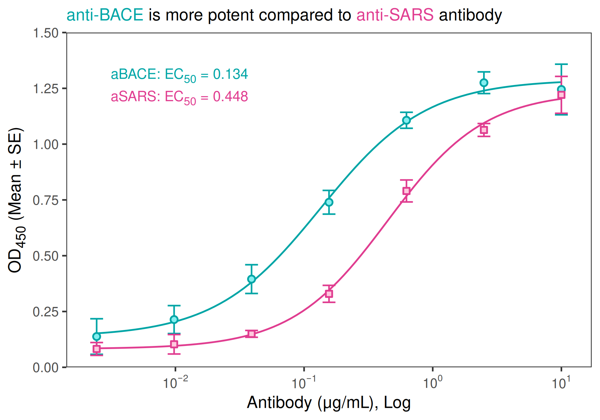

library(dplyr)
library(ggplot2)
library(tidyplate)
library(drc)
library(ggtext)Introduction
Here is an example of how to fit and analyse ELISA data using ggplot2 and drc.
First we import plate data using the tidy_plate function from the tidyplate package:
# Converts microwell shaped data to tidy data
raw_data <- tidy_plate("data/elisa_example.xlsx")
glimpse(raw_data)Rows: 50
Columns: 10
$ well <chr> "A01", "A02", "A03", "A04", "A05", "A06", "B01", "…
$ coat_protein_name <chr> "sBACE", "sBACE", "sBACE", "sBACE", "sBACE", "sBAC…
$ coat_protein_ug <dbl> 0.2, 0.2, 0.2, 0.2, 0.2, 0.2, 0.2, 0.2, 0.2, 0.2, …
$ coat_protein_source <chr> "NS0", "NS0", "NS0", "NS0", "NS0", "NS0", "NS0", "…
$ primary_mab_name <chr> "aBACE", "aBACE", "aBACE", "aSARS", "aSARS", "aSAR…
$ primary_mab_clone <chr> "6626.1000000000004", "6626.1000000000004", "6626.…
$ primary_mab_conc <dbl> 10.0000000, 10.0000000, 10.0000000, 10.0000000, 10…
$ secondary_mab_name <chr> "goat-aHuman", "goat-aHuman", "goat-aHuman", "goat…
$ secondary_mab_dil <chr> "1to5000", "1to5000", "1to5000", "1to5000", "1to50…
$ od450 <dbl> 1.396, 1.170, 1.299, 1.324, 1.170, 1.299, 1.374, 1…Prepare data before plotting
# Extracting blank values and calculating their mean
blank_data <- raw_data |>
dplyr::filter(primary_mab_name == "blank")
mean_blank <- mean(blank_data[["od450"]], na.rm = TRUE)
# Blanking OD values and summarizing their mean and standard deviation
summary <- raw_data |>
dplyr::filter(primary_mab_name != "blank") |>
mutate(blanked_od = od450 - mean_blank) |>
group_by(primary_mab_name, primary_mab_conc) |>
summarise(
mean_od = mean(blanked_od, na.rm = TRUE),
sd_od = sd(blanked_od, na.rm = TRUE),
.groups = 'drop'
)
head(summary)# A tibble: 6 × 4
primary_mab_name primary_mab_conc mean_od sd_od
<chr> <dbl> <dbl> <dbl>
1 aBACE 0.00244 0.138 0.0797
2 aBACE 0.00977 0.214 0.0626
3 aBACE 0.0391 0.395 0.0644
4 aBACE 0.156 0.740 0.0531
5 aBACE 0.625 1.11 0.0358
6 aBACE 2.5 1.28 0.0486Compute EC50 for each antibody
# Helper function to fit 4PL and extract EC50 + CI
fit_one_ab <- function(df) {
fit <- drm(
mean_od ~ primary_mab_conc,
data = df,
fct = LL.4()
)
ed <- ED(fit, 50, interval = "delta")
pars <- coef(fit)
bottom <- pars["c:(Intercept)"]
top <- pars["d:(Intercept)"]
y_ec50 <- bottom + (top - bottom) / 2
tibble(
antibody = df$antibody[1],
ec50 = ed[1, "Estimate"],
ec50_se = ed[1, "Std. Error"],
ec50_low = ed[1, "Lower"],
ec50_up = ed[1, "Upper"]
)
}
ec50_df <- summary |>
group_by(primary_mab_name) |>
group_modify(~ fit_one_ab(.x)) |>
ungroup()
Estimated effective doses
Estimate Std. Error Lower Upper
e:1:50 0.134427 0.016674 0.081364 0.187490
Estimated effective doses
Estimate Std. Error Lower Upper
e:1:50 0.448393 0.045076 0.304942 0.591845print(ec50_df)# A tibble: 2 × 5
primary_mab_name ec50 ec50_se ec50_low ec50_up
<chr> <dbl> <dbl> <dbl> <dbl>
1 aBACE 0.134 0.0167 0.0814 0.187
2 aSARS 0.448 0.0451 0.305 0.592The final plot
I am making this plot a bit fancy.
colors <- c("aBACE" = "#00a5a6", "aSARS" = "#e03d90")
light_colors <- prismatic::clr_lighten(colors, 0.7)
ec50_label <- ec50_df |>
mutate(
label = paste0(
primary_mab_name, ": EC~50~ = ", signif(ec50, 3)
),
x = 0.015,
y = c(1.3, 1.2)
)
theme_set(theme_bw(base_size = 20))
ggplot(
summary,
aes(
x = primary_mab_conc,
y = mean_od,
group = primary_mab_name,
color = primary_mab_name,
shape = primary_mab_name,
fill = primary_mab_name
)
) +
geom_smooth(
method = drc::drm,
method.args = list(fct = drc::L.4()),
se = FALSE,
linewidth = 1,
show.legend = FALSE
) +
geom_errorbar(
aes(ymin = mean_od - sd_od, ymax = mean_od + sd_od),
width = 0.1,
show.legend = FALSE
) +
geom_point(size = 3, stroke = 1.5) +
geom_textbox(
data = ec50_label,
aes(x, y, label = label),
size = 6,
face = "bold",
width = 0.35,
box.color = NA,
fill = NA
) +
scale_x_log10(labels = scales::label_log()) +
scale_y_continuous(
limits = c(0, 1.5),
n.breaks = 7,
expand = expansion(0)
) +
scale_color_manual(name = NULL, values = colors) +
scale_fill_manual(name = NULL, values = light_colors) +
scale_shape_manual(name = NULL, values = c(21, 22)) +
labs(
x = "Antibody (\U03BCg/mL), Log",
y = "OD~450~ (Mean \U00B1 SE)",
title = "<span style='color:#00a5a6'>anti-BACE</span> is more potent compared to<span style='color:#e03d90'> anti-SARS</span> antibody"
) +
theme(
legend.position = "none",
plot.title = element_markdown(size = 20),
axis.title.y = element_markdown(),
panel.grid = element_blank()
)